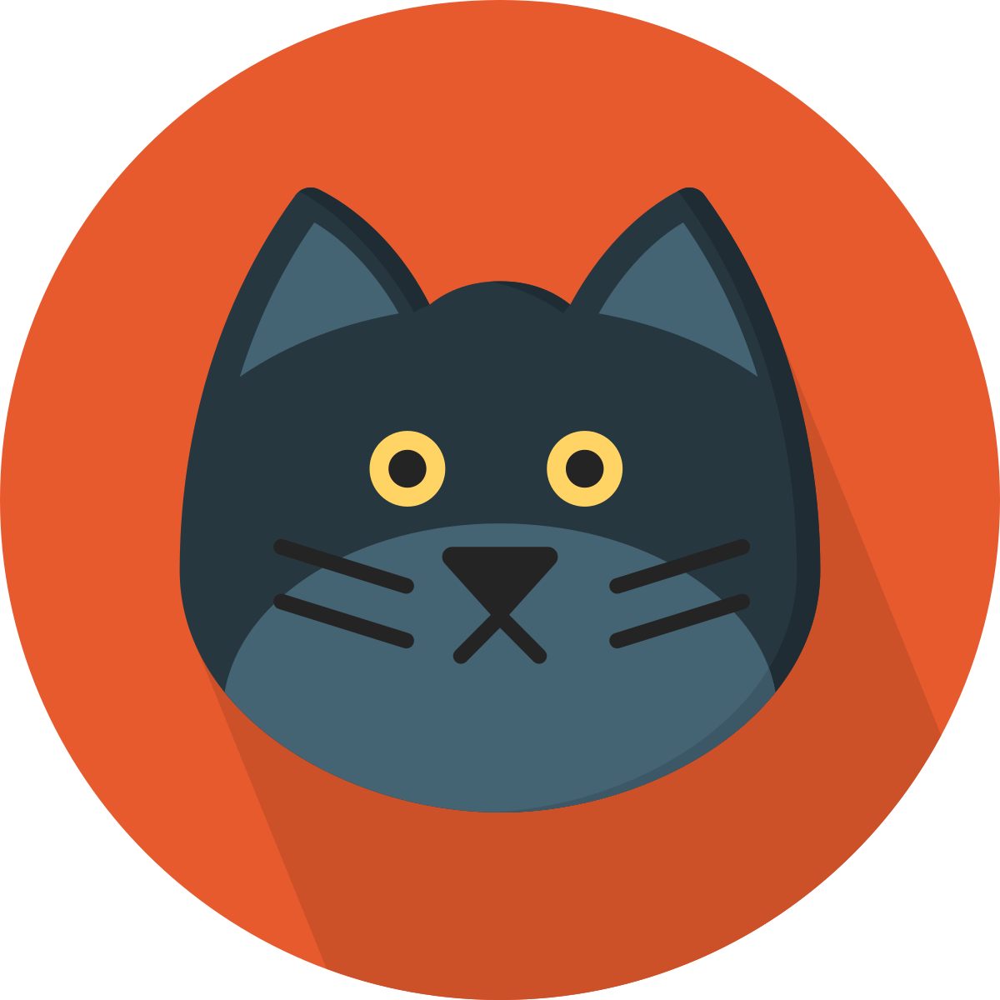

<ion-header>
  <ion-toolbar>
    <ion-title class="ion-text-center">Location Tracker</ion-title>

    <ion-buttons slot="end" >
      <ion-button routerLink="/tab/location-tracker/manage-device">
      <ion-icon name="add-outline"></ion-icon>
      </ion-button>
    </ion-buttons>
  </ion-toolbar>
</ion-header>

<ion-content>
  <ion-list>
    <ion-item *ngFor="let item of device | async">
      <ion-grid>
        <ion-row>
          <ion-col class="ion-padding-top" size="2" routerLink="/tab/location-tracker/pet-profile">
            <ion-avatar>
              
            </ion-avatar>
          </ion-col>
          <ion-col size="7" routerLink="/tab/location-tracker/pet-profile">
            <ion-card>
              <ion-card-subtitle>{{ item.deviceDescription }}</ion-card-subtitle>
              <ion-card-title>{{ item.deviceName }}</ion-card-title>
              <ion-card-subtitle>{{ item.deviceId }}</ion-card-subtitle>
            </ion-card>
          </ion-col>
          <ion-col size="3" class="ion-padding-top">
            <ion-button class="ion-text-center" fill="outline" color="dark" routerLink="/tab/location-tracker/pet-location">Track</ion-button>
          </ion-col>
        </ion-row>
      </ion-grid>
    </ion-item>
  </ion-list>

</ion-content>
